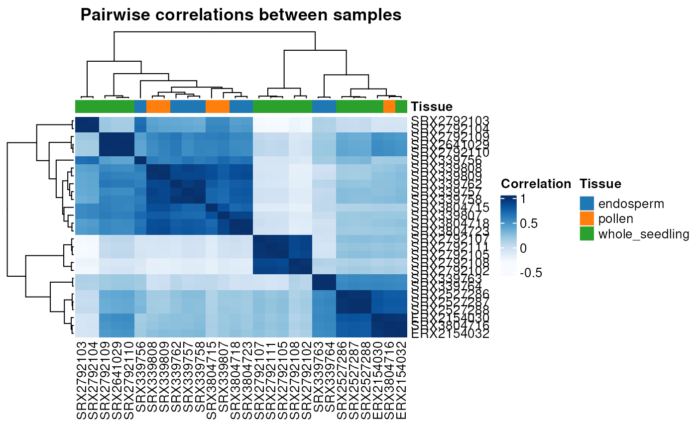

Plot heatmap of hierarchically clustered sample correlations or gene expression
Source:R/exploratory_analysis.R
plot_heatmap.RdPlot heatmap of hierarchically clustered sample correlations or gene expression
Usage
plot_heatmap(
exp,
col_metadata = NA,
row_metadata = NA,
coldata_cols = NULL,
rowdata_cols = NULL,
type = "samplecor",
cor_method = "spearman",
palette = NULL,
log_trans = FALSE,
...
)Arguments
- exp
A gene expression data frame with genes in row names and samples in column names or a `SummarizedExperiment` object.
- col_metadata
A data frame containing sample names in row names and sample annotation in the subsequent columns. The maximum number of columns is 3 to ensure legends can be visualized. Ignored if `exp` is a `SummarizedExperiment` object, since the function will extract colData. Default: NA.
- row_metadata
A data frame containing gene IDs in row names and gene functional classification in the first column. The maximum number of columns is 3 to ensure legends can be visualized. Default: NA.
- coldata_cols
A vector (either numeric or character) indicating which columns should be extracted from column metadata if exp is a `SummarizedExperiment` object. The vector can contain column indices (numeric) or column names (character). By default, all columns are used.
- rowdata_cols
A vector (either numeric or character) indicating which columns should be extracted from row metadata if exp is a `SummarizedExperiment` object. The vector can contain column indices (numeric) or column names (character). By default, all columns are used.
- type
Type of heatmap to plot. One of 'samplecor' (sample correlations) or 'expr'. Default: 'samplecor'.
- cor_method
Correlation method to use in case type is "samplecor". One of 'spearman' or 'pearson'. Default is 'spearman'.
- palette
RColorBrewer palette to use. Default is "Blues" for sample correlation heatmaps and "YlOrRd" for gene expression heatmaps.
- log_trans
Logical indicating whether to log transform the expression data or not. Default: FALSE.
- ...
Additional arguments to be passed to
ComplexHeatmap::pheatmap(). These arguments can be used to control heatmap aesthetics, such as show/hide row and column names, change font size, activate/deactivate hierarchical clustering, etc. For a complete list of the options, see?ComplexHeatmap::pheatmap().
Examples
# \donttest{
data(filt.se)
plot_heatmap(filt.se)

# }